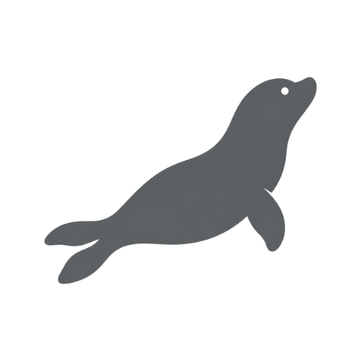

AI voice-recorder cardPilot · Fictional
Overall Normal. Sells, with repeat buyers; subscription and moat unproven.
Next: Three-month retention; a test against big-platform rivals.

Assess moat using a comparable alternative under the same conditions. Easily reproduced model features offer limited evidence of defensibility. For integrated devices, ask how on-device measurements, device-specific data or calibration improve customer outcomes. For software, examine data rights, workflow integration or observed switching costs. Mark missing evidence unknown and assess research fit separately from the six commercial grades.
Not investment advice.
Paste your deck into the review tool. By default it needs no API key: it writes a prompt, you paste that into your own ChatGPT, Claude, DeepSeek or Qwen, and paste the answer back. Your material never touches this site.
Six dimensions: Demand, Business model, Capital efficiency, Moat, Execution, Return. Four tiers: Unknown, Weak, Normal, Strong (or N/A). Four gates that stop everything: fraud, technology that cannot work, cash about to run out, integrity. Every project is compared with the best at its stage, anywhere. Unknown means not yet proven, not bad.
| Tier | Score | Meaning |
|---|---|---|
| Strong | 3 | Clear edge for its stage |
| Normal | 2 | Typical for its stage |
| Weak | 1 | Examined; a clear shortfall |
| Unknown | No score | Not yet proven |
| N/A | No score | Not at this step yet |
| Hold | Overall only | A gate is blocked |
Unknown and N/A carry no score: they neither lower nor raise the result.
The reference value is the average of the rated dimensions, rounded to the nearest tier. It is a reference only.
A person sets the overall. If any gate is verified as blocked, the overall is Hold.
Two logics hold anywhere. Capital: money follows proof, on standard terms. Focus: people, supply chain and time behind one thing. Founder buy-back obligations, valuation ratchets and local reinvestment quotas count as risks.
Our forecast for 11 November 2027: software is worth less, hardware costs less, and what stays hard to copy is the two built together. The tool checks every judgment against it. Machines that do real work are the destination; light devices are the step we can test today.
The inner circle is where we go and look in person: earbuds, voice recorders, watches, bands.
Fictional scenario · All six grades illustrate the review method.
Select a dimension to explore it. Select it again for the overview.
| Dimension | ① Recorder | ② Inspection | ③ Screening |
|---|---|---|---|
| Demand | Strong 3 | Strong 3 | Unknown — |
| Business model | Normal 2 | Normal 2 | N/A — |
| Capital efficiency | Normal 2 | Normal 2 | Weak 1 |
| Moat | Weak 1 | Weak 1 | Strong 3 |
| Execution | Strong 3 | Strong 3 | Normal 2 |
| Return | Unknown — | Unknown — | Unknown — |
| Rated | 5 / 6 | 5 / 6 | 3 / 6 |
| Reference | Normal | Normal | Normal |
| Gates | None blocked | None blocked | Cash: blocked |
| Overall (set by a person) | Normal | Normal | Hold |
Overall Normal. Sells, with repeat buyers; subscription and moat unproven.
Next: Three-month retention; a test against big-platform rivals.
Overall Normal. Factories reorder; a rival could catch up in six months.
Next: Prove the moat is data or process.
Overall Hold. Cash gate blocked: money runs out before the key milestone.
Next: Extend the runway first.
The same method, pointed at a person. Six dimensions, one hard question each, each checked against 11 November 2027.
| Health | How many more years of high-intensity work do you have? |
|---|---|
| Wealth | How many years could you go without making a decision for money? |
| Creation | Have you made something others can’t — and can AI multiply it? |
| Relationships | Who would act for you in a crisis? |
| Reputation | Can a stranger verify that your judgment has been right? |
| Position | Who pays you, and could you switch? |
One gate: health. If health is Weak, everything else is on Hold.
Not career or investment advice.
Overall Normal. The craft is there; the record is not. Savings cover four months.
Next: Put the work and the judgments in public.
The same tool with the Personal template. Nothing you type leaves your browser except to the model you choose.
Anyone can run the same method with their own model.
No analytics. Your key and input never touch this site; model providers may charge their own rates.